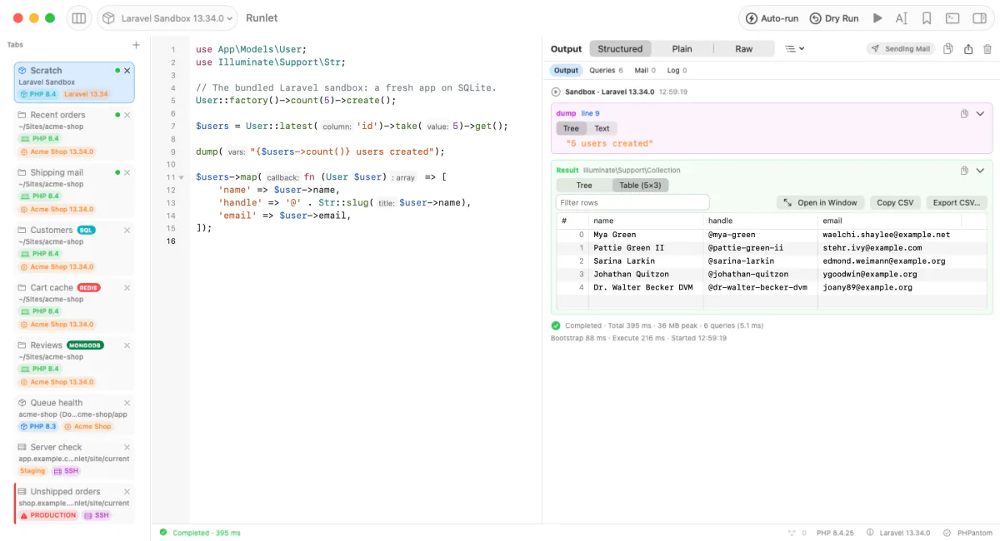
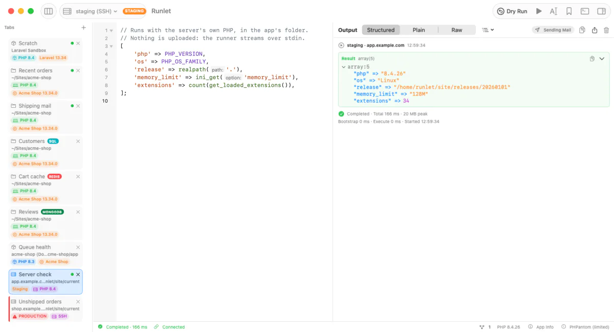
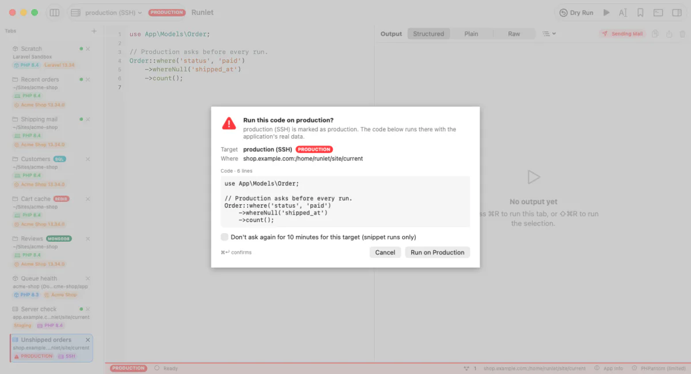
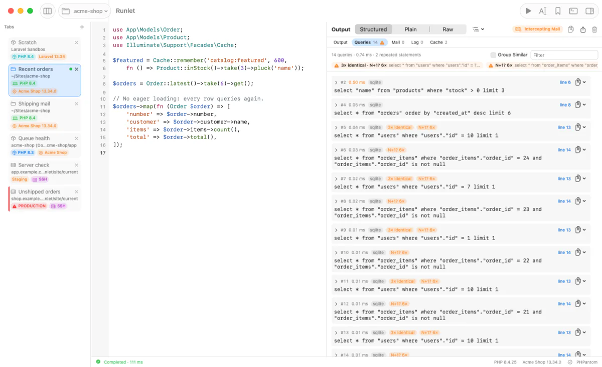
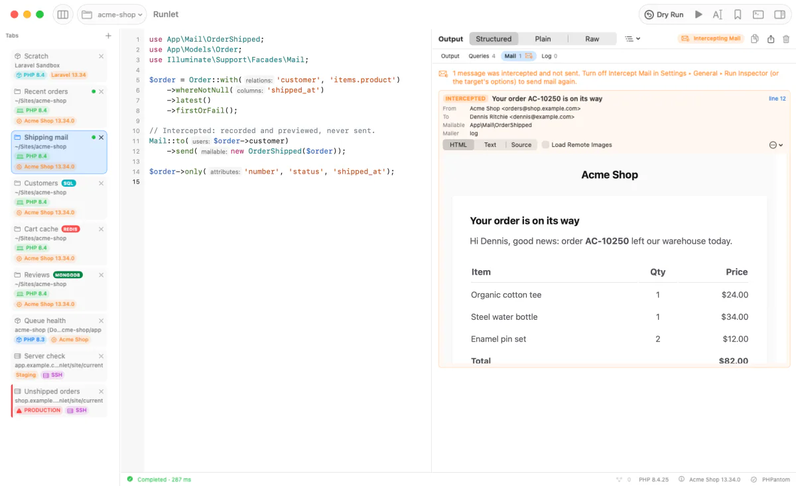
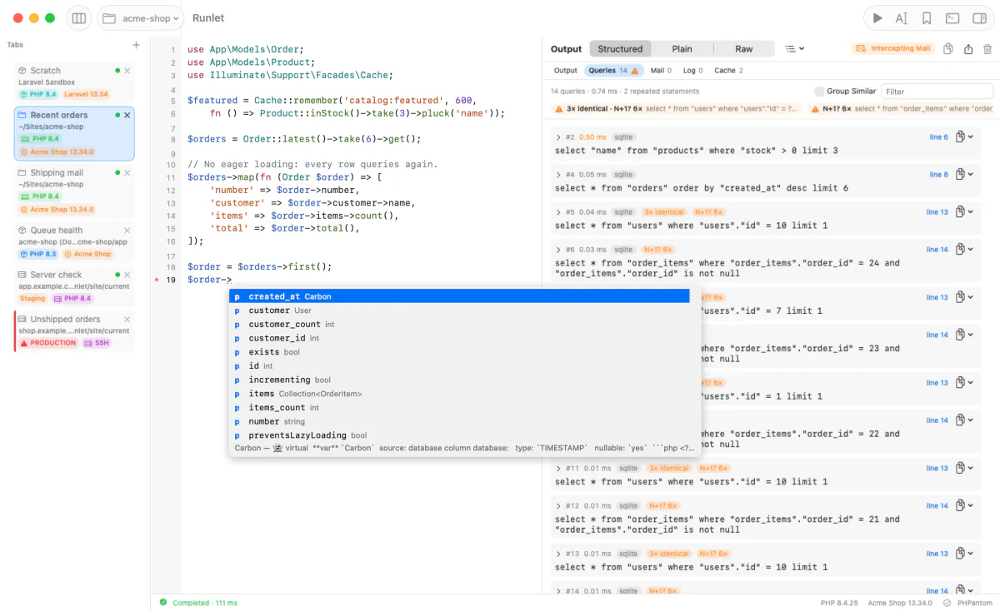
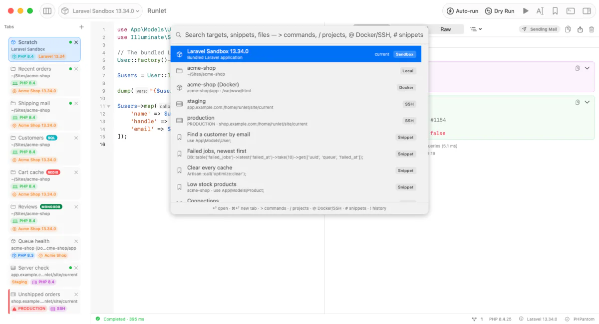
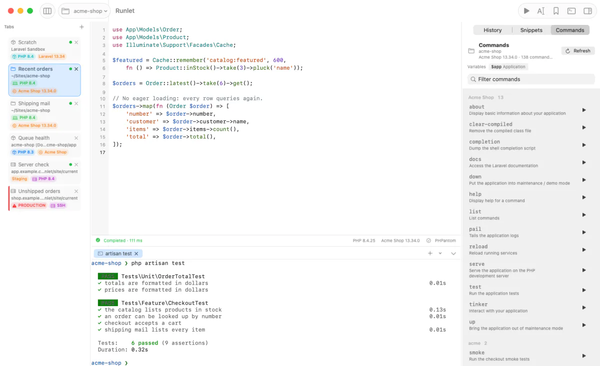

Laravel sandbox
A fresh Laravel app with SQLite, bundled with Runlet. Runs on your PHP, on Runlet’s own when you have none, or in a php:8.4-cli container.
Early preview
The PHP scratchpad that feels at home on your Mac.
Run snippets against a bundled Laravel sandbox, your local projects, Docker containers, or servers over SSH. See the result, the SQL queries it ran, the mail it sent, and the logs it wrote.

Runlet’s own PHP
Runlet runs PHP on a Mac with nothing installed: no Herd, no Homebrew, no Docker. One click downloads its own PHP 8.5.8, and the Laravel sandbox and your projects run on it.
![Four numbered steps in Runlet on a Mac without PHP or Docker. 1, No PHP, no Docker: a banner above the editor says no PHP was found and offers a Download PHP 8.5.8 button. 2, One click, about 26 MB: the same banner shows the download at 52 percent. 3, Checked and installed: Settings, PHP lists PHP 8.5.8 from Runlet as the automatic choice and says PHP 8.5.8 installed. 4, Runs right away: a Laravel sandbox tab runs a snippet that returns PHP 8.5.8, Runlet's build 8.5.8-r1, a price formatted in euros with intl, the SQLite version, mysqli and sodium loaded, and 53 extensions.](assets/shots/own-php-dark-2400.webp)
A banner above the sandbox or a local project offers Runlet’s PHP. So does Settings ▸ PHP.
A self-contained PHP 8.5.8 for your Mac’s CPU, about 26 MB, from Runlet’s GitHub releases. Nothing downloads until you click.
It must match the SHA‑256 pinned in Runlet and run before it’s installed in Application Support.
The sandbox and local projects use it right away, with intl, SQLite, MySQL, PostgreSQL, Redis, gd, and sodium.
Your PHP always comes first. Herd, Homebrew, or the php on your PATH win, and Runlet’s PHP is the fallback. Choose it per project or as the default, or remove it, in Settings ▸ PHP.
Run anywhere
Every tab has a target. Switch it from the toolbar or with ⌘P, press Run, and the output, dumps, errors, and Stop behave the same everywhere.
A fresh Laravel app with SQLite, bundled with Runlet. Runs on your PHP, on Runlet’s own when you have none, or in a php:8.4-cli container.
Open any folder. Laravel, Symfony, WordPress, and Composer projects boot automatically, on PHP 7.4 or newer.
Pick a running container or Compose service. Runlet finds it again after it’s recreated, and never picks a different one silently.
Hosts from ~/.ssh/config, jump hosts included. ssh-agent and 1Password work as in Terminal; password and 2FA logins stay connected until you disconnect.

Mark a target as staging or production. Production gets a red badge on its tab, toolbar, and status bar, and every run shows you what will run, and where, before it does.
ssh.
Run inspector
Results arrive as structured, expandable values. Next to them, Runlet shows the SQL queries the run made, the mail it sent, and the log messages it wrote.

Mailables, notifications, views, and HTML responses render in a locked-down preview: no JavaScript, no navigation, and no remote loads unless you allow them. Turn on mail interception and Laravel builds each message without sending it.

Laravel, Eloquent without Laravel, Symfony’s Doctrine, and WordPress, with no setup. Standalone DBAL or plain PDO take one line in a driver.
Expandable value trees, a sortable table for rows and collections, a CLI-style transcript, or the exact bytes.
Copy values as JSON, PHP, or Markdown, export tables as CSV, and save the whole output to a file.
Editor & completion
Runlet indexes your project with PHPantom, so models, relations, and columns complete as you type, with hover, signature help, and diagnostics. It works for Docker and SSH targets too, from their checkout on your Mac.

” in a Laravel project, listing the Order model's columns and relations with their types: created_at Carbon, customer User, customer_id int, items Collection of OrderItem, number string, and more.">⌘P opens anything: targets, snippets, recent files, and your run history. ⇧⌘P finds any command. Every shortcut can be changed in Settings.
.runlet/snippets.
Drivers & commands
Laravel, Lumen, Laravel Zero, Symfony, WordPress, and Composer projects are detected and booted for you. For anything else, a small driver in your project’s .runlet folder teaches Runlet how to boot it.

Boot your app, hand snippets the variables they need, add commands to the Commands pane, declare tools that run on your Mac, and add sections of your own to the run inspector.
// .runlet/ShopDriver.php
use Runlet\Drivers\LaravelDriver;
class ShopDriver extends LaravelDriver
{
public function variables(): array
{
return parent::variables() + [
'cart' => $this->app->make(Cart::class),
];
}
public function hostCommands(): array
{
return [
'up' => 'docker compose up -d',
];
}
}Your login shell, in the project’s folder. Commands wait until the shell is ready.
runlet commandrunlet . opens the current folder; runlet file.php opens a file.
Personal snippets, plus project snippets your team commits in .runlet/snippets.
Every run, per project or for all of them, searchable with the keyboard.
Each window has its own tabs. Save them as a workspace file and reopen the set later.
Menus, the command palette, and shortcuts share one list of commands. Remap any shortcut in Settings.
Tabs opened from files reload when another app changes them, and ask when you have edits.
File paths in output open at their line in PhpStorm, VS Code, Cursor, Zed, Sublime Text, and more.
No account and no telemetry. Runlet sends no analytics or crash reports and doesn’t check for updates.
Open source
Runlet is free, and the whole app is on GitHub under the MIT License: read the code, file an issue, send a pull request, or build your own copy.
Built with Swift, SwiftUI, and AppKit. Runlet bundles SwiftTerm (MIT), PHPantom, nikic/php-parser (BSD-3-Clause), and a Laravel sandbox (MIT); their notices ship inside the app.
Install
Get the .dmg or .zip from the latest release and move Runlet to Applications. One universal app runs on Apple silicon and Intel.
Runlet is an early release, ad-hoc signed and not yet notarized, so macOS blocks the first launch. Open Runlet once; macOS says it can’t verify it. Then go to System Settings ▸ Privacy & Security and click Open Anyway next to the message about Runlet, then confirm. Or run this in Terminal:
xattr -dr com.apple.quarantine /Applications/Runlet.app
The Laravel sandbox is ready in the first tab. Press ⌘R; if your Mac has no PHP, click Download PHP 8.5.8 in the banner above it first. Open a project with ⇧⌘O, or from Terminal with the runlet command (Runlet ▸ Install Command-Line Tool…).
Yes. There is no paid version, no trial, and no account. Runlet is open source under the MIT License.
Runlet is an early preview, built quickly with AI assistance. Expect rough edges. If something breaks or feels off, please open an issue on GitHub; it helps a lot.
Runlet is an early release, ad-hoc signed and not yet notarized by Apple, so macOS blocks the first launch. Open Runlet once; macOS says it can’t verify it. Then go to System Settings ▸ Privacy & Security and click Open Anyway next to the message about Runlet, then confirm. Or remove the quarantine flag in Terminal with xattr -dr com.apple.quarantine /Applications/Runlet.app. If you prefer, build it from source.
No. Code runs on the target you pick: your Mac, a Docker container, or a server you connect to with your own ssh. On a server, Runlet’s runner is streamed to PHP over stdin and never written there; the only thing kept is a private cache of the app’s compiled PHP, which you can turn off. Runlet has no telemetry and stores no SSH keys or passwords.
No. Your snippets run when you press Run; opening a project, switching tabs, or restoring a session doesn’t run them. The Commands pane boots a project to list its commands only while the pane is open, and never on its own for SSH or production targets. Production targets confirm every run and every project command.
No. If your Mac has no PHP, Runlet offers to download its own: a self-contained PHP 8.5.8, about 26 MB, checked against a SHA-256 pinned in the app and kept in Application Support. The sandbox and your local projects run on it, without Herd, Homebrew, or Docker. If you have PHP installed, Runlet uses yours first.
Your projects can use PHP 7.4 or newer, locally, in Docker, or over SSH. The bundled Laravel sandbox needs PHP 8.3 or newer; without it on your Mac, Runlet offers to download its own PHP 8.5.8, or runs the sandbox in a php:8.4-cli container.
Yes. Symfony, WordPress, Lumen, Laravel Zero, and plain Composer projects work out of the box, and a project driver in .runlet/ can boot anything else. See the driver guide.
Download the newest release and replace the app. Runlet doesn’t update itself yet. Your tabs, snippets, history, and targets stay in ~/Library/Application Support/Runlet.